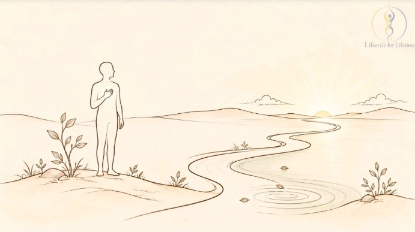

Most of us know what we want from life.
- Better health.
- Peace of mind.
- Good sleep.
- Energy.
- Meaningful relationships.
- Financial stability.
- Confidence.
- A healthy body.
- Time for ourselves and the people we care about.
But there is another question we rarely ask:
What is my present lifestyle actually providing me?
Not what I hope it will provide someday.
Not what I intend to do next month.
Not what I know I should be doing.
What is the reality of my life today?
Your lifestyle is already producing something
Every day, the way we sleep, eat, breathe, move, think, work, communicate and respond becomes part of our present reality.
Sometimes that reality provides:
- energy and stability
- peaceful sleep
- meaningful relationships
- discipline
- clarity
- physical well-being
- a sense of direction
At other times it may provide:
- tiredness
- disturbed sleep
- continuous mental activity
- irregular eating
- stress
- loss of discipline
- recurring weight changes
- difficulty staying present
- knowing what to do but still finding it difficult to practise consistently
None of this needs to begin with judgement.
It begins with observation.
Before we regulate our lifestyle, we first need to observe it
People often begin by searching for solutions.
- A new diet.
- A new exercise plan.
- A meditation technique.
- A productivity system.
- A morning routine.
- Another piece of advice.
Sometimes these are useful. But a solution becomes meaningful only when we have clearly identified what actually needs attention.
A person may think the problem is lack of exercise while irregular sleep is affecting the entire day. Someone may focus on food while continuous stress is influencing appetite and behaviour. Another person may know exactly what should be done but still find it difficult to practise consistently.
So the first question is not always: “What should I do?” Sometimes it is: “What is actually happening in my present life?”
Lifestyle is more than what we do
Lifestyle is not only food, exercise or routine. It is the relationship between many parts of our daily functioning:
- our body
- breath
- thoughts
- behaviour
- sleep
- work
- relationships
- environment
- habits
- awareness
- and the decisions we repeatedly make
This is why changing one isolated behaviour does not always create lasting regulation. The different parts of our life continuously influence one another.
Lifestyle is the function of present reality. When we begin observing that reality clearly, patterns that previously operated automatically can gradually become visible. And what becomes visible can be consciously addressed.
Awareness creates space before action
A stressful message arrives.
A thought appears.
An emotion rises.
The body reacts.
Breathing changes.
Behaviour follows.
When patterns repeat for years, they can begin to feel like our personality or simply “the way life is.” Awareness gives us the accessibility to observe the pattern before automatically continuing it.
That observation creates clarity. Clarity supports appropriate action. And appropriate action, practised consistently, strengthens self-regulation.
This is why awareness is not separate from lifestyle. It is part of how lifestyle becomes conscious.
You may already know a great deal
Many people are not lacking information.
They already know sleep matters.
They know movement is important.
They know food influences health.
They know stress affects the body.
They know they need time for themselves.
But there is another question:
How does knowledge become daily practice?
Knowing something and living it consistently are not the same thing.
That distance is where observation, acceptance, discipline and consistency become important.
We do not begin by fighting our present lifestyle.
We begin by accepting that this is where we are today.
Acceptance does not mean remaining there.
It means seeing reality clearly enough to know where to begin.
Ask yourself one question today
Before changing anything, take a few quiet minutes and ask:
What is my present lifestyle providing me?
Observe your:
- sleep,
- energy,
- breathing,
- food patterns,
- movement,
- thoughts,
- stress,
- relationships,
- attention,
- discipline,
- and sense of direction.
Do not immediately try to correct everything.
First observe.
Because sometimes the first meaningful regulation in life begins with clearly seeing what is already happening.
Every journey begins with observation
Before we regulate our lifestyle, we first need to observe it.
And sometimes one meaningful question can reveal what hundreds of instructions cannot.
What is your present lifestyle providing you?
Lifestyle for Lifetime™
K-Lifestyle Framework™
Presence → Passion → Patience
Awareness → Clarity → Self-Regulation
If this question makes you want to look more closely at your present reality, you can begin with the Lifestyle Clarity Assessment™.